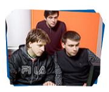

Для кого розроблена програма
Школярі та випускники(15-18 років)
отримають першу професію, не відкладаючи на потім свою мрію стати програмістом
Студенти ВНЗ(18-23 роки)
освоять другу спеціальність паралельно з університетською освітою
Представники інших професій (23-55 років)
яких не влаштовує поточна кар'єрна і фінансова перспектива, зможуть перевчитися на розробника ПЗ і отримати затребувану професію

Всі бажаючі підвищити IT-кваліфікацію
систематизують свої знання і отримують робочі навички, затребувані сучасному IT
Як проходить начання
Партнери академії
Luxoft
Luxoft - глобальна технологічна компанія, одна із лідерів ринку послуг цифрової трансформації та створення програмних продуктів Luxoft пропонує індивідуальні IT-рішення, які заохочують до змін у бізнесах клієнтів у всьому світі.
Luxoft об`єднує понад 13 000 спеціалістів із 22 країн світу зі штаб-квартирою у м. Цуг, Швейцарія. Україна є однією з найпотужніших локацій в географії Luxoft. Близько 3500 фахівців усіх ключових напрямків зосереджені в офісах Києва, Одеси та Дніпра.